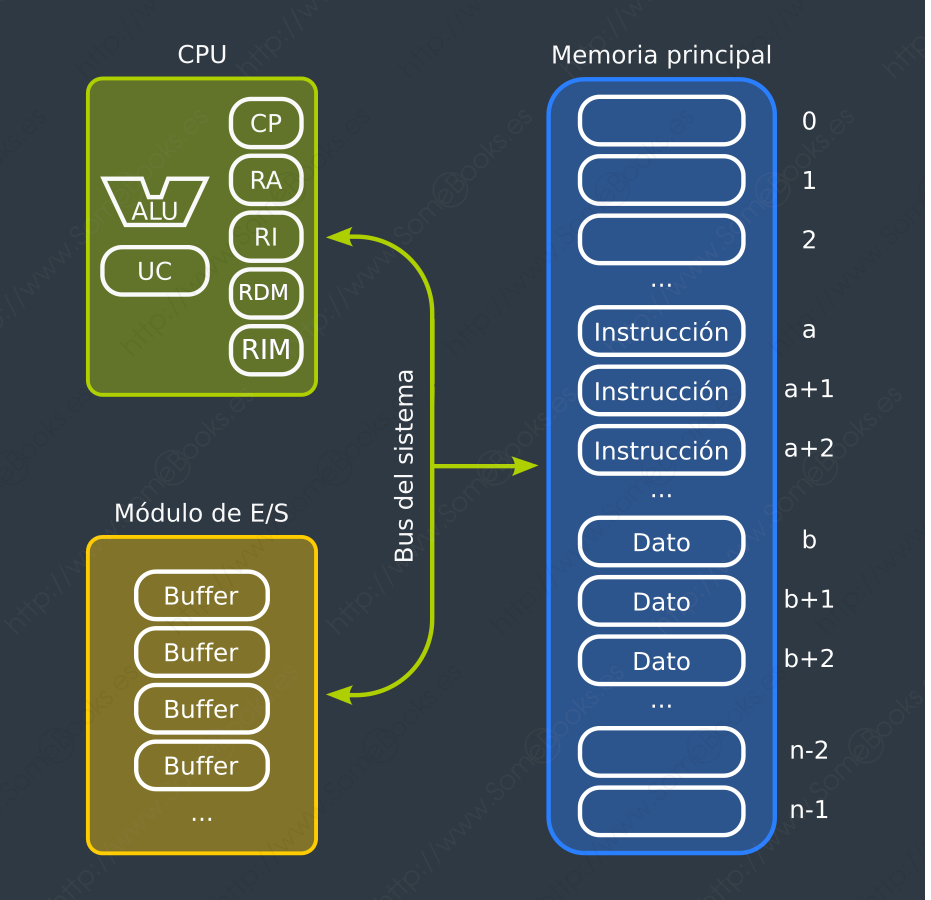
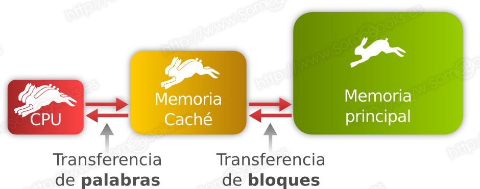
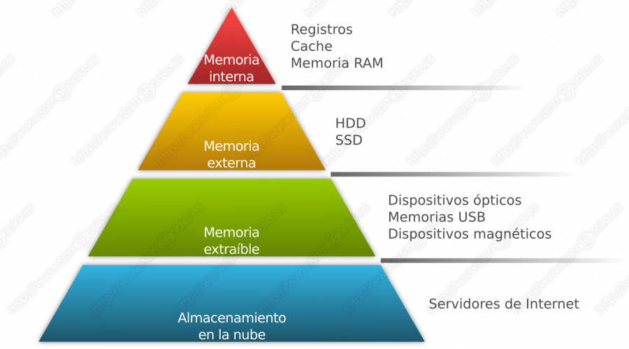
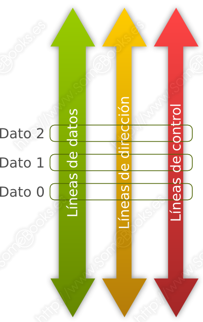

1. Sistemes Informàtics
1.1. ¿Qué ès un ordinador?
En valencià, la paraula ''ordinador'' té el seu origen en la paraula francesa ''ordinateur'' i fa referència a un dispositiu electrònic, de propòsit general, amb capacitat per a rebre informació, emmagatzemar-la durant un temps (almenys l'imprescindible per a dur a terme la seua tasca), processar-la per a rebre un resultat i oferir aqueix resultat a l'exterior.
Per tant, podem dir que es tracta d'un dispositiu amb les següent funcions bàsiques:
- Transmetre informació.
- Emmagatzemar informació.
- Processar informació.
1.2. Definicions
- Informàtica: Ciència que estudia el tractament automàtic de les dades. Procedeix de la fusió de les paraules informació i automàtica.
- Ordinador: Màquina composta d'elements físics (Maquinari) capaç de realitzar una gran varietat de treballs a gran velocitat i amb gran precisió.
- Maquinari (Hardware): Component físics d'un ordinador.
- Programari (Software): Component no físics de l'ordinador que posen en funcionament a aquests últims. Són els programes que ens serveixen per a processar les dades.
- Microprogramari (Firmware): Part intangible (programari) dels components del maquinari. Programari amb el qual estan programades les memòries ROM
- Instrucció: Ordre necessària perquè funcionen els components físics.
- Programa: Conjunt d'instruccions.
- Aplicació: Conjunt de programes.
- Sistema Operatiu: Component Programari d'un Sistema Informàtic capaç de fer que els programes processen informació (dades) sobre els components electrònics d'un ordinador.
1.3. Sistema Informàtic
Sempre que parlem d'un sistema, ens referim a diferents elements que es relacionen entre si. En el cas d'un sistema informàtic, aquests elements són tres:
- El maquinari: Que inclou qualsevol dispositiu electrònic utilitzat en el procés de la informació.
- El programari: Que està format per qualsevol element lògic involucrat en el procés.
- Els usuaris: Són les persones que ho utilitzen. És l'element en el qual menys es repara quan es parla d'un sistema informàtic, però sense ell, la resta dels elements no tindrien sentit.
Els elements físics que formen part del sistema informàtic reben el nom genèric de maquinari. Aquest concepte és molt genèric i pot fer referència tant a components que es troben dins del moble de l'ordinador, com a uns altres que estan en l'exterior.
La majoria continuen utilitzant, hui dia, el model d'arquitectura que va introduir el matemàtic hongarés John Von Neumann en 1949. Segons aquest esquema, un ordinador pot representar-se d'una forma modular, amb aquests quatre elements:
1.4 Components físics
- El processador, que dirigeix el funcionament de l'ordinador i processa les dades.
- La memòria principal, que emmagatzema les instruccions que executa el processador i les dades sobre els quals s'apliquen aquestes.
- Els dispositius d'entrada/eixida, que comuniquen a l'ordinador amb el seu entorn.
- Els busos, que actuen com a canal de comunicació entre el processador, la memòria i els dispositius d'entrada/eixida.
En definitiva, podríem representar l'esquema de funcionament de l'arquitectura Von Neumann amb aquesta imatge:

1.5. CPU (Processador)
Ja hem dit abans que el processador és una part fonamental del maquinari de l'ordinador, que s'encarrega de llegir de memòria les instruccions que ha d'executar, les interpreta i les executa.
Encara que l'estructura interna de qualsevol processador actual és extremadament complexa, a nivell lògic podem dir que està formada pels següents elements:
- Una unitat aritmètica i lògica o ALU (de Arithmetic-Logic Unit)
- Una unitat de control o UC
- Una sèrie de registres de memòria
Vegem aquests components amb detall.
1.5.1. ALU
La ALU (de Arithmetic-Logic Unit) s'encarrega de realitzar les operacions de càlcul:
- Aritmètiques (com les sumes)
- Lògiques (com AND i OR)
- Comparatives (que permeten saber, per exemple si un valor és major que un altre).
1.5.2. UC
La UC realitza el següent:
- Obté de la memòria la següent instrucció a executar.
- La interpreta.
- Torna a la memòria per a obtindre les dades implicades en l'operació, els situa en la ALU.
- Una vegada obtingut el resultat, el retorna a la posició adequada de la memòria.
1.5.3. Registres
Els registres de memòria emmagatzemen temporalment informació relacionada amb el processament de dades que s'està realitzant. Els principals són:
- Comptador de programa: Que guarda la direcció de memòria de la instrucció que s'executarà a continuació de l'actual.
- Registre Acumulador: Guarda els resultats temporals d'una operació cíclica que es troba en curs en la ALU.
- Registre d'instrucció: Conté el codi de la instrucció que s'està executant.
- Registre de direcció de memoria: Conté la direcció de memòria a la que s’accedeix.
- Registre d'intercanvi de memòria: Conté informació que s’ha de escriure o llegir de la memoria.
1.5.4. Joc d'instrucions
És el conjunt d'instruccions que un processador en particular és capaç d'interpretar. En realitat, a més de les instruccions, també estan implicats els registres que inclou el disseny del processador, els tipus de dades que sap manejar, les interrupcions, etc.
Algunes vegades, processadors amb un disseny totalment diferents tenen els mateixos jocs d'instruccions. Això es fa perseguint la compatibilitat entre diferents models de processador del mateix fabricador o entre processadors de fabricants diferents.
No obstant això, el normal és que els processadors que són diferents tinguen jocs d'instruccions diferents.
Interpretant el funcionament del processador d'una forma simplista, podem dir que l'execució d'un programa es basa en un procés repetitiu en el qual es van llegint i executant una sèrie d'instruccions preestablides.
Cicle d'instrucció
El Cicle bàsic d'instrucció i segueix el següent esquema:
En definitiva, el cicle d'instrucció és el període que tarda el processador a executar una instrucció del seu joc d'instruccions. Podem dividir-ho en dues etapes:
- Lectura
- Execució
Etapa de Lectura
Llegir la instrucció següent:
- Es passa el valor del comptador de programa al bus de direccions.
- Es carrega la instrucció des de la memòria principal al registre de dades.
- S'incrementa el valor del comptador de programa.
- Es carrega el valor del registre de dades en el registre d'instrucció.
- El descodificador d'instrucció interpreta la instrucció.
- Si hi ha dades implicades, es carreguen en els registres de dades.
Etapa de Execució
Executar la instrucció:
- La unitat de control interpreta la instrucció com una sèrie de senyals de control i les envia a les unitats funcionals implicades perquè es realitze l'acció.
- Segons la instrucció, el resultat s'envia a la memòria principal o a algun dispositiu.
Instruccions
En general, les instruccions es classifiquen en les següents categories:
- Processador-memòria: S'envien dades des de la memòria al processador o al revés.
- Processador-E/S: S'envien dades des d'un dispositiu d'entrada/eixida al processador o al revés.
- Tractament de dades: realitza una operació aritmètica, una operació lògica o una comparació.
- Control: Modifica la seqüència d'execució del programa, és a dir, col·loca un valor diferent en el registre comptador de programa.
Interrupcions
Una Interrupció consisteix en un senyal que rep el processador en unes certes situacions i que ocasiona la suspensió temporal del programa que s'està executant. L'objectiu és atendre possibles incidències que sorgisquen al llarg de l'execució del programa.
D'aquesta manera s'aconsegueix millorar l'eficiència del processament perquè, per exemple, el processador pot dedicar-se a executar un procés mentre espera una operació d'entrada/eixida d'un procés diferent, sent avisat quan l'operació d'entrada/eixida concloga.
Existeixen diferents tipus d'interrupcions:
- De programa: Es produeixen quan, en tractar d'executar una instrucció, s'obté un error inesperat (una divisió per zero, l'ús d'una posició de memòria no autoritzada, etc).
- Per fallada maquinari: Quan es produeix una fallada imprevista en l'ús d'un dispositiu (com un error de paritat en una posició de memòria).
- De rellotge: Produïdes pel rellotge del sistema.
- D'entrada/eixida: quan es produeix una situació d'error en una operació d'entrada/eixida o quan aquesta ha acabat satisfactòriament.
1.6. Memòria
Des d'un punt de vista genèric, la memòria és la part de l'ordinador que s'encarrega d'emmagatzemar les dades que intervenen en el procés. No obstant això, dins del sistema informàtic existeixen diferents tipus de memòria, que anirem desglossant:
1.6.1. Registres
Els registres són xicotetes porcions de memòria que es troben integrades en el processador i que, per tant, funcionen a la mateixa velocitat que aquest.
1.6.2. Memòria Cau
- El seu funcionament és similar al de la memòria principal, que comentarem a continuació, però la seua grandària és molt menor i el seu accés molt més ràpid.
- La idea és que, quan el processador necessita accedir a una dada, es copia a la memòria cau tot el bloc que el conté. Així, si es produeixen accessos successius (per a llegir o escriure) a la mateixa dada o a les seues dades circumdants, el temps d'accés es redueix dràsticament.

1.6.3. Memòria Principal
- També es diu Memòria d'accés aleatori o Memòria RAM (de l'anglés, Random-Access Memory) perquè en els primers ordinadors era l'única memòria que permetia accedir a les dades sense seguir un ordre previ.
- Aquest és el lloc on han de trobar-se tant les instruccions com les dades perquè el processador puga utilitzar-los. El seu contingut s'organitza en posicions de memòria que estan identificades de manera individual per una direcció única.
1.6.4. Dispositius d'emmagatzematge extern
- Són dispositius que permeten emmagatzemar grans volums d'informació.
- El seu principal característica és que no és volàtil, és a dir, no necessiten un subministrament continu de corrent elèctric per a mantindre la informació que contenen.
- Existeixen dispositius construïts a partir de tecnologies molt diferents, com les unitats magnètiques (HDD, de l'anglés Hard Disk Drive), les òptiques (CD/DVD, de l'anglès Compact Disc/Digital Versatile Disc) o les flaix (SSD, de l'anglés Solid State Drive).
1.6.5. Jerraquia de memories
En principi, existeixen tres dades fonamentals que hem de tindre en compte quan ens referim a la memòria: la seua quantitat, la seua velocitat i el cost per unitat d'emmagatzematge (per exemple, el cost per byte).
Gràficament obtenim una jerarquia de la memòria amb forma piramidal

Si prenem com a punt de partida la imatge anterior, podem afirmar que, segons es descendeix en la jerarquia, es compleixen les següents característiques:
- Disminueix el cost per byte.
- Augmenta la capacitat.
- Augmenta el temps d'accés.
- Disminueix la freqüència amb la qual s'accedeix a la memòria.
La memòria principal funciona a una velocitat molt inferior a la del processador. No obstant això, aquest ha d'accedir a la memòria per a obtindre cadascuna de les instruccions que ha d'executar. Resulta evident la càrrega que suposa aquesta situació per al rendiment del processador.
Per a resoldre-ho, els dissenyadors recorren al principi de proximitat. La idea consisteix a col·locar, entre el processador i la memòria principal, una memòria de poca grandària i gran velocitat, a la qual anomenem memòria cau.
La idea és que, cada vegada que el processador sol·licite una dada de la memòria principal, es busque primer en la memòria cau. Si no es troba, es llig de la memòria principal el bloc complet que conté la dada sol·licitada i es guarda en la cau.
1.7. Unitats d'Entrada/Eixida
Els dispositius d'entrada/eixida tenen un doble objectiu:
- Permeten que l'ordinador es comunique amb l'exterior. Així obté la informació que ha de processar o ofereix els resultats dels seus càlculs.
- Codifiquen la informació d'entrada en un format que comprenga l'ordinador i, la informació d'eixida, en un format que s'entenga en l'exterior.
El concepte general de les unitats d'entrada/eixida es va desenvolupar des de les primeres generacions d'ordinadors, en els quals les unitats d'entrada eren bastant senzilles.
Hui dia, aquest concepte abasta una gran varietat de dispositius, molts d'ells totalment diferents i que s'han desenvolupat per a satisfer les necessitats de les diferents aplicacions.
Existeix una gran varietat de dispositius d'entrada/eixida, per la qual cosa començarem per classificar-los en tres categories:
- Dispositius d'entrada: Són els que s'encarreguen de subministrar informació a l'ordinador. Entre els més coneguts trobem aquests: teclat, ratolí, webcam, micròfon, escàner, etc
- Dispositius d'eixida: Són els que s'encarreguen d'oferir informació a l'exterior. Entre els més coneguts trobem aquests: monitor, impressora, altaveus, auriculars, etc.
- Dispositius d'entrada i eixida: Són els que poden realitzar les dues funcions anteriors de manera simultània. Entre els més coneguts trobem els següents: pantalla tàctil, dispositius d'emmagatzematge extern (discos durs, memòries USB, CDs o Dvds, …), targetes de xarxa, …
1.8. Busos
Podem definir els busos com a canals que serveixen per a transferir dades entre els diferents components d'un ordinador. Permeten interconnectar des de les diferents parts d'un circuit integrat fins als dispositius perifèrics units a l'ordinador. Segons la seua naturalesa, podem trobar dos tipus de busos:
- Línies de dades: Tots els bits d'un mateix byte són enviats alhora per les diferents línies de dades del bus.
- Línies d'adreça: Per elles circulen els bits que representen la posició de memòria o el dispositiu de destí de la informació que s'està transmetent.
- Línies de control: S'encarreguen d'enviar senyals de control entre els dispositius. Poden contindre informació sobre l'estat de la comunicació, interrupcions o DMA.
